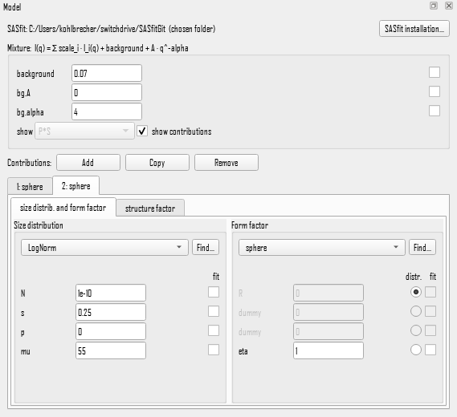
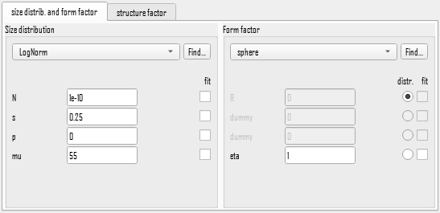
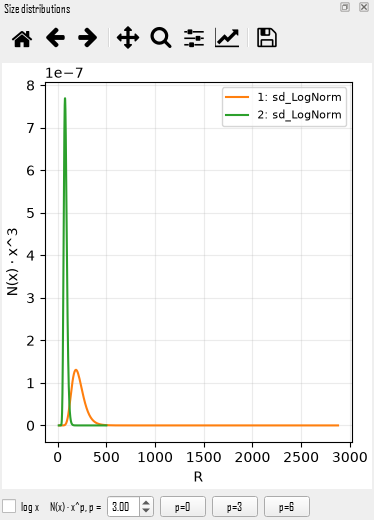

The model explorer
pysasfit-explorer # a sphere
pysasfit-explorer ff_sphere --sd sd_LogNorm --sq sq_hardsphere
pysasfit-explorer ff_sphere --add ff_cylinder,sd_LogNorm # second contribution of a mixture
pysasfit-explorer --project my.sasstudio # a saved session
From a script: explore(...), see Scripting.
In pysasfit-gui the explorer is the pySASstudio tab (the second); its own menus (Save project as…,
SASfit installation…, Integration…, the panel entries of View, Sliders) appear in the launcher’s File,
Settings and View menus, and the tab can be detached into its own window (The launcher: all tools in one window).
Windows
The window consists of four panels, as in pySASred and pySASmorph:
panel |
content |
open |
|---|---|---|
Model |
the contributions as tabs, background, parameters |
View → Model |
I(q) |
the plot with the q range, scales and the Hold / Export / Copy Python buttons |
View → I(q) |
Fit |
data, fit selection, constraints, priors, optimiser, result |
View → Fit |
Size distributions |
N(x)·xp of the distributions of the model |
View → Size distributions |
At the start the model is on the left, the plot and the size distributions side by side, and the fit panel below
both. Every panel can be moved by its title bar, stacked onto another panel as a tab or put beside it, detached into
a window of its own (first button in its title bar; the window does not stay on top of the main window, closing it
docks the panel again, closing the main window closes it) and hidden (cross; View shows it again). View →
Arrange panels, Dock all panels and Reset layout sort them; the title bar of the panel in use is coloured
(Preferences → Appearance). The arrangement is kept for the next start (studio_layout.json next to the
preferences; Settings → Forget last session of the launcher removes it); the model itself is kept in project files.
The model dock

Two contributions, each with a form factor, a size distribution and an optional structure factor.
Each tab is one contribution: a form factor, optionally a size distribution and a structure factor, chosen from cascading menus that follow SASfit’s groups. Add, Copy and Remove above the tabs change the number of contributions; the model is the sum of the contributions (each with its scale) plus the background. Building models describes the options.
Parameter rows

A parameter row: name, value, slider (optional), distr. radio button and fit box with its bounds.
Value: type it and press Enter (a decimal comma is accepted). The slider range is re-centred on a typed value.
Sliders: View → Sliders adds a slider to each row. The slider covers 0 to twice the value, limited by the bounds.
Fit box: ticks the parameter for fitting. Two fields below it take the lower and the upper bound; empty means no bound.
Distr. radio button: the form-factor parameter that is integrated over the size distribution.
Parameters named
dummyare not used by the function; their fields are disabled.
Data and the plot
The Fit dock loads a data file (q, I, ΔI [, Δq], with a factor for unit conversion) and takes an optional fit
range. The plot shows data, model, the dotted contributions (show contributions), the background, and the
normalised residuals Δ/σ below. show switches between I = P·S, P and S.
Size distributions

The size distribution N(x)·xp. The exponent p (0, 3 or 6 with the buttons) weights the distribution: p = 3 gives the volume weight.
The exponent p set here is also the one used when you save a result (see Results and export).
Python ports of SASfit plugins
The form-factor menu has a second tree, py plugin ports, right after by plugins. It is a copy of the group
tree of the SASfit plugins, filled with the functions that have a Python port (see Python ports of SASfit plugins): the same
groups and labels, marked “(py)”. An entry of by plugins calls the compiled SASfit plugin, the corresponding
entry of py plugin ports the Python port, with the same parameters. The ports are named ff_py_<name> (e.g.
ff_py_sheared_cylinders__maier_saupe_ for ff_sheared_cylinders__maier_saupe_); projects and Copy Python code
store these names, so C and Python versions can be used side by side, even in one model.
2D map
The 2D map panel (a tab next to I(q)) shows I(q_x, q_y) of the current model on the detector, as seen looking towards the sample (q_x to the right, q_y up; Axis and angle conventions). ψ, the direction of q, is measured from q_x (horizontal) towards q_y, counter-clockwise. For every function with a ψ parameter (the anisotropic SASfit plugins and their Python ports, e.g. sheared cylinders/spheroids, polymers under shear flow, deformed polymers and networks) the model is evaluated at ψ steps directions in [0°, 180°) and interpolated onto pixels × pixels points in [-q max, q max]² (q max empty: that of the I(q) panel). Isotropic models need one evaluation. log I and the colour map change only the display. With auto the map follows every change of the model while the panel is visible; a map that takes more than 3 s switches auto off (press Update).
From a script: pysasfit.studio.map2d.detector_map(model, qmax) returns (qy, qz, I), map2d.plot(qy, qz, I)
draws it.
Settings
Settings → Integration…: how the size-distribution integral is computed (SASfit’s integrators or scipy Gauss–Legendre, number of nodes, range, tolerances).
Settings → SASfit installation…: the folder with the libraries; remembered between sessions.
Saving a session
File → Save project (Ctrl+S) writes everything to a .sasstudio file: contributions, values, bounds, data, plot and
fit settings, constraints, priors and the last result. Open project… (Ctrl+O) or --project FILE restores it.
examples/studio/data/project.sasstudio is a ready-made example.